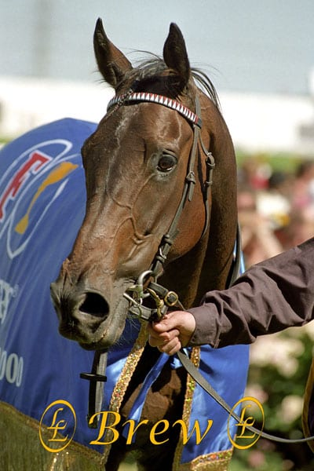

Winning Brew là một cô ngựa cái giống Thoroughbred, nổi danh toàn cầu khi phá bỏ mọi giới hạn vật lý của loài ngựa. Sức mạnh bùng nổ của cô trong những mét đầu tiên khiến mọi đối thủ chỉ có thể nhìn thấy bụi đường.
Vận tốc: 43.97 mph (tương đương 70.76 km/h).
Tại trường đua Penn National, Winning Brew đã hoàn thành quãng đường 1/4 dặm chỉ trong vỏn vẹn 20.57 giây. Cho đến nay, chưa có chú ngựa nào vượt qua được con số chính thức này.